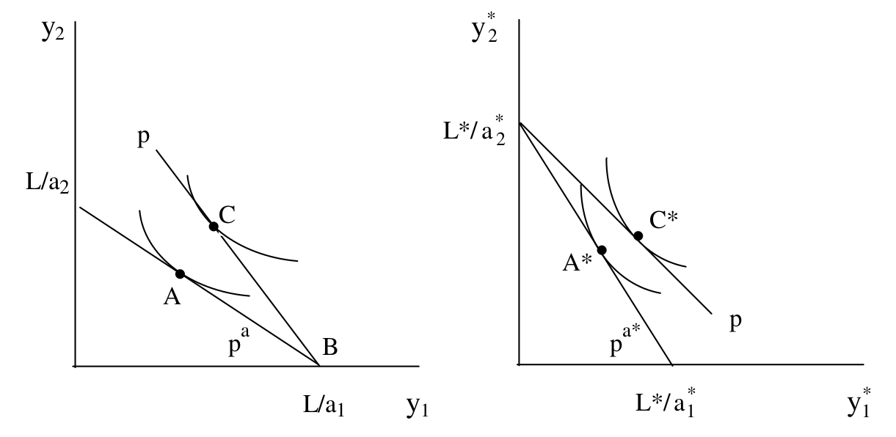
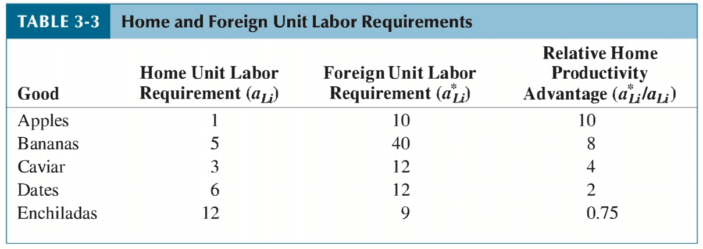
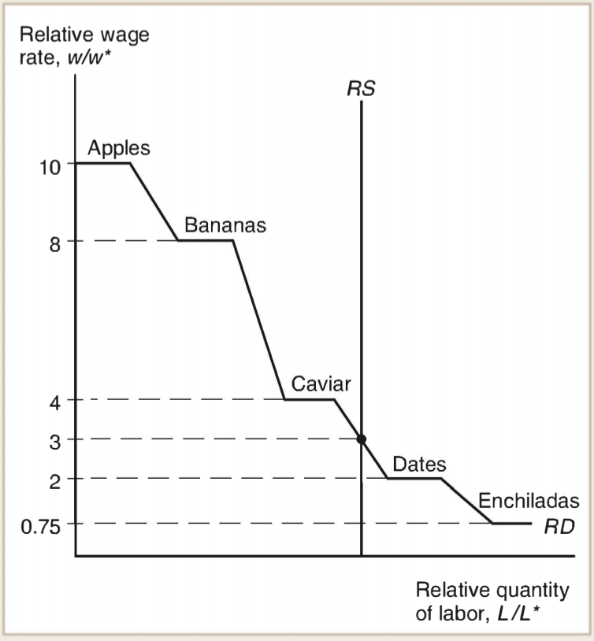

Ricardian Model of International Trade#
The Ricardian model is our first attempt to explain why countries trade with one another. It identifies the sources of mutually beneficial trade and predicts which types of goods are exported and imported by different nations. Although remarkably simple, the model yields powerful insights that remain relevant to modern policy debates. Is foreign competition unfair when based on low wages? Is free trade beneficial only if a country is strong enough to withstand foreign competition? Does trade exploit poor nations by locking them into low-wage production? We begin to answer these questions—echoing centuries of skepticism about globalization—within the Ricardian framework.
Even after hundreds of years of trade theory, and a near universal consensus among economists about the merits of free trade, policymakers continue to denounce the import of manufactured goods from developing countries, claiming they displace domestic jobs. In the United States, for instance, the persistent trade deficit with China is often portrayed as a “bad deal,” where the U.S. allegedly loses wealth by importing more than it exports. This rhetoric resembles the neo-mercantilist arguments of the seventeenth century. England’s Treasurer, Thomas Munn (1682), once wrote:
The ordinary means therefore to increase our wealth and treasure is by Foreign Trade, wherein we must ever observe this rule; to sell more to strangers yearly than we consume of theirs in value. For … that part of our stock exports which is not returned to us in wares imports must necessarily be brought home in treasure bullion…
Even with a model as simple as Ricardo’s, we can scrutinize such claims and assess whether trade imbalances imply losses or whether trade, in fact, enriches all participants.
By the end of this chapter you should:
Explain how the Ricardian model illustrates the principle of comparative advantage.
Demonstrate gains from trade and refute common fallacies about international trade.
Relate empirical evidence on how productivity differences explain wage differences and trade patterns.
After examining the Ricardian model, we will turn to the Heckscher–Ohlin model, which deepens our understanding of who gains and who loses from trade and from trade protection policies.
Motivating Numerical Example#
The fundamental lesson of classical trade theory is that nations—and individuals—can benefit from their differences by specializing in the activities they do relatively well. The greater the differences, the greater the potential gains. Before formalizing the Ricardian model, consider two simple examples that illustrate this lesson.
Absolute Advantage#
Adam Smith first proposed the theory of absolute advantage as a direct challenge to mercantilist thinking, which viewed trade as a zero-sum game. Consider the following table which shows the production technology for the United States and Mexico for Cloth and Wheat.
United States |
Mexico |
|
|---|---|---|
Wheat (bushels/hour) |
6 |
1 |
Cloth (yards/hour) |
4 |
5 |
The United States can produce more wheat per hour than Mexico, while Mexico can produce more cloth per hour than the United States. We say that the US has an absolute advantage in the production of wheat, and Mexico has an absolute advantage in the production of cloth.
If each country specializes in producing the good for which it has an absolute advantage, then there exists a trading arrangement which is mutually beneficial. Here is one such arrangement: the US exchanges 6 bushels of wheat for 6 yards of Mexican cloth. If the US instead produced cloth by itself, it could only generate 4 yards of cloth with one labor hour. By trading with Mexico, that single labor hour can be transformed into 6 yards of cloth. The US has effectively gains 2 yards of cloth by trading instead of producing it domestically. Equivalently, it would take 1.5 hours for the US to produce 6 units of cloth, so by trading with Mexico it effectively saves 0.5 labor hours. Similarly, if Mexico tries to produce wheat itself it would take 6 labor hours. Instead, Mexico uses \(6/5\) labor hours to produce 6 units of cloth in order to acquire 6 units of wheat from the US. Mexico saved \(24/5\) labor hours, or equivalently gains 24 units of cloth.
In this example, we assume that the exchange rate between cloth and wheat is one-to-one. There is a range of exchange rates which allow for mutually beneficial trade, and later we will show how to compute the equilibrium exchange rate. For now, we simply want to demonstrate how gains from trade are possible.
Comparative Advantage#
It should not be surprising that if each country is more efficient at producing a particular good, then they can gain by specializing in that good and trading. However, it is also the case that even if one country is more efficient at producing every good, there can still exist gains from trade. David Ricardo offered this profound insight in his theory of comparative advantage-one of the most important lessons in all of the economics.
Consider the following production technologies:
United States |
Mexico |
|
|---|---|---|
Wheat (bushels/hour) |
6 |
1 |
Cloth (yards/hour) |
4 |
2 |
Notice that in this example, Mexico has an absolute disadvantage in the production of both goods. The United States is more efficient at producing both cloth and wheat. Is it possible that the United States can gain from trade with Mexico even though it is better at producing everything?
Consider the following trading arrangement: the US specializes in the production of wheat and exchanges 6 bushels of wheat for 6 yards of cloth with Mexico. If the US produced cloth itself, it would require 1.5 labor hours. Instead, it uses only 1 labor hour to produce 6 units of wheat and then trades it to acquire 6 yards of cloth from Mexico. The US still saves itself 0.5 labor hours! Equivalently, we can say that the US gains 2 yards of cloth. Mexico clearly gains because it would have taken 6 labor hours to produce wheat, but by trading with the US it only takes 3 labor hours.
Hence, we have described a trading arrangement where both countries benefit from trade even though the US is better at producing all goods. The reason such an arrangement exists is because the US and Mexico have different relative productivities which measure the trade-off between producing one good versus the other. The ratio of wheat-to-cloth production for the US is \(6/4\), whereas it is \(1/2\) for Mexico. If the US wants to produce one extra unit of cloth, it must take labor away from the production of wheat. The cost of producing one extra yard of cloth is therefore \(6/4\) bushels of wheat. By similar reasoning, the cost to Mexico of producing one more yard of cloth itself is \(1/2\) bushels of wheat. Therefore, cloth production is relatively more expensive in the US compared to Mexico (\(6/4>1/2\)). This is why the US can save itself labor hours by specializing in wheat and exchanging wheat for cloth with Mexico. We say that the US has a comparative advantage in wheat, and Mexico has a comparative advantage in cloth.
As mentioned before, there are a range of production technologies for which mutually beneficial trade can occur. When we build our general model, we allow for any level of production efficiency to describe when a particular country has a comparative advantage. This allows us to predict the pattern of specialization and trade. We also compute the equilibrium exchange rate between the two countries which allows to predict the volume of trade. With these prices and quantities determines, we can then measure the gains from trade that accrue to each nation. One benefit of a general model is that we can alter parameters of the model (such as the efficiency of production) and investigate how the equilibrium prices, quantities, and gains from trade are affected. This gives us insight into how economic shocks (e.g. technological progress, falling trade costs, tariff policies) affect the production, trade, and welfare of countries.
It’s worth noting that our Ricardian theory of trade does not identify why countries have different production technologies. One can imagine many possible reasons why the US would be better at producing wheat, for example (e.g. weather, natural resources, skilled labor, farming equipment etc.) Although it is interesting to investigate the specific reason why a country is productive at making a particular good, we don’t need to know why they are productive for our theory.
The Ricardian Model#
We now generalize these ideas to any two goods and compute the equilibrium trading trading arrangement.
Assume there exist
Two countries: Home and Foreign
Two goods: \(i=1,2\)
One factor of production: labor at Home \(L\) and Foreign \(L^*\)
Production technology is described by unit labor requirements:
\(a_i \equiv\) labor need per unit of good \(i\) at Home
\(a_i^* \equiv\) labor need per unit of good \(i\) at Foreign
We assume that labor is perfectly mobile between industries, but immobile across countries.
Assume that preferences are identical and homothetic across countries. Homotheticity guarantees that ratios of goods demanded only depends on relative prices and not income or scale (CES preferences for example). Identical preferences are assumed in order to show that technological differences can be a source of mutually beneficial trade.
Because each country has a limited number of workers, there are limits to the amount of goods that can be produced. The feasible production plans are represented by a production possibilities set:
The term \(a_i y_i\) represents the total amount of labor used to produce \(y_i\) units of good \(i\). Hence, the equations say that both Home and Foreign can not use more labor than they have. Graphically, we can represent the production possibilities sets as the region under the lines:
A critical measure of production efficiency is the opportunity cost of producing a good. For example, the opportunity cost of producing good 1 is how many units of good 2 must stop being produced in order to make one more unit of good 1. Producing one additional unit of good 1 requires \(a_1\) hours of labor. Each hour devoted to the production of good 1 could have been used instead to produce an amount of good 2 equal to \(1/a_2\). Therefore, the opportunity cost of good 1 in terms of good 2 is
Since labor is the only factor of production, the relative supply of goods is determined by whether workers choose to produce good 1 or good 2. Workers will choose to work in the industry with higher wages. The hourly wage of workers producing good 1 is \(p_1/a_1\) and the hourly wage of workers producing good 2 is \(p_2/a_2\).
Both goods are produced if and only if
A reminder about equilibrium wages. Consider the profit of a firm:
and recognize that if \(p_i/a_{iL} < w\) then the price is too low for firms to survive so no amount of good \(i\) is produced. Conversely if \(p_i/a_{iL} > w\) then firms will want to produce good \(i\) and competition will force the price down until \(p_i/a_{iL}=w\). The lesson is that if good \(i\) is produced, then it must be the case that \(w/p_i = 1/a_{iL}\).
In the absence of international trade, the relative prices of goods are equal to their relative unit labor requirements.
We may say that the relative price of Good 1 in terms of Good 2 is equal the opportunity cost of Good 1 in terms of Good 2.
Definition: Comparative Advantage
A country has a comparative advantage in the production of good i if its opportunity cost of producing good i is smaller than the other country.
If \(a_1/a_2 < a_1^*/a_2^*\) then Home (Foreign) has a comparative advantage in the production of good 1 (good 2).
If \(a_1/a_2 > a_1^*/a_2^*\) then Foreign (Home) has a comparative advantage in the production of good 1 (good 2).
A country has a comparative advantage in the production of good i if the autarky relative price of good i is less than the other country.
If \(p_1/p_2 < p_1^*/p_2^*\) then Home (Foreign) has a comparative advantage in the production of good 1 (good 2).
If \(p_1/p_2 > p_1^*/p_2^*\) then Foreign (Home) has a comparative advantage in the production of good 1 (good 2).
Suppose that Home is more efficient in the production of both goods
then Home is said to have an absolute advantage in the production of both goods.
A country can be more efficient producing both goods, but it will have a comparative advantage in only one good. Even if a country is the most (or least) efficient producer of all goods, it still can benefit from trade.
Let’s allow both countries to trade with each other. Each country will benefit by completely specializing in the production of the good for which it has a comparative advantage and trading.

To determine the equilibrium world price, let’s begin by defining the world relative supply curve. In this example, we assume that Home has a comparative advantage in the production of good 1.
Consider any any world relative price \((p_1/p_2)^W < (p_1/p_2) \) and \((p_1/p_2)^W < (p_1^*/p_2^*) \). In this case, both countries find it cheaper to acquire good 1 on the “world market” compared to producing it themselves. Therefore, both countries completely specialize in producing good 2 resulting in a world relative supply of good 1 equal to zero. Alternatively, if \((p_1/p_2) < (p_1/p_2)^W < (p_1^*/p_2^*)\) then Home specializes in producing good 1 and Foreign specializes in good resulting in world relative supply \(\frac{L/a_1}{L^*/a_2^*}\). Finally, if \((p_1/p_2)^W > (p_1/p_2)\) and \((p_1/p_2)^W > (p_1^*/p_2^*)\) then both countries specialize in good 1, resulting in an infinite relative supply of good 1.
To find the equilibrium world relative price, we need to bring in the relative demand goods. Our assumption that preferences are homothetic and identical across countries guarantees there exists a well behaved downward sloping relative demand curve. The equilibrium price obtains where world relative demand equals world relative supply.
Any equilibrium world price which is in between each country’s autarky price, \(p<p^w<p^*\), benefits both countries since each can import the good at a lower price compared to autarky. The distribution of gains from trade change with the world price: the closer the world price is to a country’s autarky price, the less the gains from trade for that country; the further away the world price is the more the gains from trade for that country.
We consider how the distribution of gains from trade are affected by both demand shocks and supply shocks. A demand shock alters consumers’ desire for the relative consumption of good 1 for any given relative price. Graphically, this is represented by a shift of the demand curve. A demand shock which raises the demand for good 1, for example, shifts the demand curve rightward resulting in a higher world relative price of good 1. This increases the gains from trade for the country producing good 1, and decreases the gains from trade for the country producing good 2. If demand is particularly strong for one of the goods, the country that does not have a comparative advantage in that good will not gain from trade, but does not lose from trade either.
A supply shock changes the amount of good each country is capable of producing. In our model, this occurs when either \(L\) or \(a_i\) changes. We will assume that the supply shock to \(a\) are small enough so that comparative advantage is not reversed. An increase in \(L\) or a decrease in \(a_1\), for example, shifts the supply curve to the right indicating a higher world supply of good 1. This pushes the world price of good 1 down, thereby decreasing the gains from trade for the country producing good 1 and increasing the gains from trade for the country producing good 2. Smaller countries, those with small \(L\), are more likely to gain from trade since it requires especially small demand for its good to erase gains from trade. Similarly, it is more likley that small countries can retain gains from trade when there are demand shocks.
Ricardian Model with Many Goods#
To move a bit closer to reality, let’s extend the model to include multiple goods \(i=1,2,...N\). For each good, we can calculate the ratio of Home’s unit labor requirement to Foreign’s and order them,
Goods will always be produced where it cheapest to make them. It will be cheaper to produce the good in Home if
where \((w,w^*)\) are the wages at Home and Foreign. This implies that any good which satsifies
will be produced at Home. We have already ordered the goods in terms of the ratio of Home’s unit labor requirement to Foreign’s. Therefore, all the goods to the left of \(w/w^*\) will be produced at Home and the remaining goods will be produced at Foreign.
The ordering captures each good’s comparative advantage ranking. A low value of \(a_i/a_i^*\) means Home is relatively efficient at producing good \(i\) — not necessarily in an absolute sense, but compared to how efficient Home is in other goods. Goods on the left of the ordering are those where Home’s relative productivity advantage is greatest; goods on the right are those where Foreign has the relative edge.
Note that the ordering itself depends only on technology — it is independent of wages. Wages determine where along this fixed ranking the cutoff falls, but not the ranking itself. This separation between technology (which determines the order) and market conditions (which determine the cutoff) is a key feature of the Ricardian model.


The Continuum Case#
The discrete model with \(N\) goods already delivers the key insights, but the algebra becomes cleaner — and the comparative statics sharper — when we pass to a continuum of goods \(z \in [0,1]\). Let \(a(z)\) and \(a^*(z)\) denote the unit labor requirements for good \(z\) at Home and Foreign respectively. We can always re-index goods such that the relative Home advantage,
is strictly decreasing: \(A'(z) < 0\). Goods near \(z = 0\) are those in which Home has the strongest comparative advantage; goods near \(z = 1\) are those in which Foreign has the strongest comparative advantage.
For a given relative wage \(w/w^*\), there exists a cutoff value \(\tilde{z}\) defined implicitly by $\(A(\tilde{z}) = w/w^*\)$
The pattern of specialization follows immediately:
Home produces good \(z\) if \(A(z) > w/w^*\), i.e. for all \(z < \tilde{z}\),
Foreign produces good \(z\) if \(A(z) < w/w^*\), i.e. for all \(z > \tilde{z}\).
At the cutoff good \(\tilde{z}\), both countries are indifferent between producing and not producing — unit costs are equalized. Since \(A(z)\) is strictly decreasing, this cutoff is unique for any given \(\omega\), and a higher relative wage \(\omega\) shifts \(\tilde{z}\) to the left, shrinking the range of goods produced at Home.
Let preferences be given by the Cobb-Douglas aggregate
where \(b(z) = p(z)c(z)/Y\) is the expenditure share on good \(z\), with \(\int_0^1 b(z)\, dz = 1\). The Cobb-Douglas structure is analytically convenient because it implies that expenditure shares \(b(z)\) are constant and independent of prices — a property we will use heavily below.
Define the share of Home expenditure that falls on domestically produced goods as
This is increasing in \(\tilde{z}\): a larger range of Home-produced goods mechanically raises the domestic expenditure share.
To determine equilibrium, we impose the condition that total Home income equals Home expenditure. Home income is \(wL\), and Home residents spend fraction \(\phi(\tilde{z})\) of world income on Home-produced goods:
where \(\omega=w/w^*\). The \(f\) schedule is upward-sloping in \(\tilde{z}\): if the range of Home-produced goods expands at constant relative wages, demand shifts toward Home labor, creating excess demand in the Home labor market. The relative wage \(\omega\) must rise to restore equilibrium.
An equivalent way to read the \(f\) schedule is as the locus of trade balance. Home exports equal \((1-\phi(\tilde{z}))wL\) — the share of world income spent on Home goods by Foreign residents — while Home imports equal \(\phi(\tilde{z})w^*L^*\). Trade balance requires:
This is simply a rearrangement of the income-expenditure condition above, confirming that Walras’ Law holds: income-expenditure balance at Home implies trade balance.
The full equilibrium is determined by two conditions simultaneously:
Specialization (\(A\) schedule): given \(\omega\), the cutoff is \(\tilde{z}\) such that \(A(\tilde{z}) = \omega\).
Income balance (\(f\) schedule): given \(\tilde{z}\), the relative wage satisfies \(\omega = f(\tilde{z}, L^*/L)\).
The equilibrium pair \((\omega^*, \tilde{z}^*)\) is found at the intersection of these two schedules, as illustrated below. The \(A\) schedule is decreasing (higher \(\omega\) shifts the cutoff left) while the \(f\) schedule is increasing (a larger range of Home goods requires higher \(\omega\) to clear the labor market). Under standard regularity conditions, the intersection is unique.
What are equilibrium prices? Once \((\omega^*, \tilde{z}^*)\) are determined, all relative goods prices follow. For two goods both produced at Home (\(z, z' < \tilde{z}\)), relative prices reflect only domestic technology:
For a Home-produced good \(z < \tilde{z}\) relative to a Foreign-produced good \(z'' > \tilde{z}\), the relative wage enters:
The full structure of relative prices is therefore pinned down by the equilibrium \((\omega^*, \tilde{z}^*)\) together with the technology schedules \(a(z)\) and \(a^*(z)\).
What is the effect of an increase in the relative size of Foreign?
At the initial equilibrium, the increase in Foreign labor would create an excess supply of labor abroad and an excess demand for labor at home: a trade surplus.
Domestic relative wages must increase to eliminate the trade surplus while at the same time raising relative unit labor costs at Home.
Higher labor costs at Home implies a loss of comparative advantage and thus fewer commodities are produced domestically.
What is the effect of technological improvements in Foreign?
What is the effect of technological improvements in Foreign?
At the initial equilibrium, a reduction in Foreign labor costs implies fewer commodities produced at Home and a corresponding trade deficit.
Domestic relative wages must decrease to eliminate the trade deficit and offsets parts of the decline in comparative advantage.
What is the effect of a demand shift away from high \(z\) goods to low \(z\) goods?
Equilibrium relative wage rises
Range of goods produced at home shrinks
Although home income certainly increased, we cannot say anything about welfare since preferences have changed
The Ricardian model proposes the following features of international trade:
Gains from trade arise from technological differences.
Each country exports the good for which it has a comparative advantage.
The world equilibrium price must lie in between autarky prices.
The smaller country stands to gain more from trade.
More productive countries are rewarded with higher wages.
The model can be extended to include:
Non-traded goods
Transport costs
Tariffs
Multiple countries (a bit difficult but we will see later in the course…)
Empirical Evidence for the Ricardian Model#
Few economists regard the Ricardian model as a complete account of the causes and consequences of world trade. Nevertheless, its two core principles retain considerable empirical relevance:
Productivity differences are a primary determinant of the pattern of trade.
It is comparative advantage, not absolute advantage, that governs specialization.
Testing these predictions is not straightforward. One fundamental difficulty is that the growth of world trade and the resulting specialization means we rarely observe what countries produce badly — productivity in sectors that have been abandoned or never developed is simply not measured. The evidence must therefore be read carefully, with this selection problem in mind.
Bangladesh and the Clothing Industry#
A striking illustration of comparative advantage in action is Bangladesh’s emergence as a major clothing exporter. Bangladesh is among the least productive economies in the world in absolute terms, yet its clothing exports grew rapidly and, at their peak, were approaching China’s in scale. The Ricardian logic is clear: even though Bangladesh was less productive than China in virtually every industry, its productivity disadvantage was far smaller in clothing than elsewhere. Comparative advantage, not absolute productivity, determined the pattern of specialization.

MacDougall (1951): US and UK Export Performance#
The earliest and most influential direct test of the Ricardian model was conducted by MacDougall (1951), who compared the export performance of the United States and the United Kingdom in the immediate post-war period. The setting was well-suited to the theory: American labor productivity exceeded British productivity in nearly every sector, giving the US an absolute advantage across the board, yet British exports remained roughly comparable in scale to American exports. This implied that Britain must have held a comparative advantage in some industries — and the Ricardian model predicts precisely which ones: those where America’s productivity lead was relatively smaller.
MacDougall found strong support for this prediction. Across a range of industries, the US tended to capture a larger export share in sectors where its productivity advantage over the UK was greatest, and Britain held its own in sectors where the productivity gap was narrower.

Golub (1995) and Golub and Hsieh (2000): Broader Cross-Country Evidence#
Golub (1995) extended this line of research by examining relative unit labor costs — the ratio of wages to labor productivity — as a predictor of export performance. Using data on bilateral trade between the US and several major economies (the UK, Japan, Germany, Canada, and Australia), Golub found that sectors in which a country had relatively low unit labor costs tended to be precisely the sectors in which that country held a comparative export advantage. This is consistent with the Ricardian prediction that cost competitiveness, driven by relative productivity, shapes the pattern of trade.

These findings were subsequently confirmed and extended by Golub and Hsieh (2000), who applied more systematic econometric methods to a broader dataset, reinforcing the conclusion that Ricardian-style productivity differences are a robust predictor of trade patterns.
Limitations and the Need for Richer Models#
Taken together, the empirical literature provides reasonably consistent support for the Ricardian model’s core prediction: comparative productivity advantage shapes the pattern of specialization and trade. However, the model’s quantitative fit is imperfect, and several real-world frictions fall outside its scope entirely:
Imperfect competition: many traded goods markets are dominated by a small number of large firms, and pricing departs substantially from the competitive benchmark.
Wage rigidity: the model assumes wages adjust freely to clear labor markets, but nominal and real wage rigidities can slow or distort the adjustment process.
Labor immobility: the model treats labor as perfectly mobile across industries within a country, whereas in practice workers face significant barriers — geographic, occupational, and sectoral — to reallocation.
These limitations do not invalidate the Ricardian framework as a first approximation, but they do suggest that a fuller account of trade patterns, factor market adjustment, and the distributional consequences of trade requires richer models — some of which we will encounter later in the course.